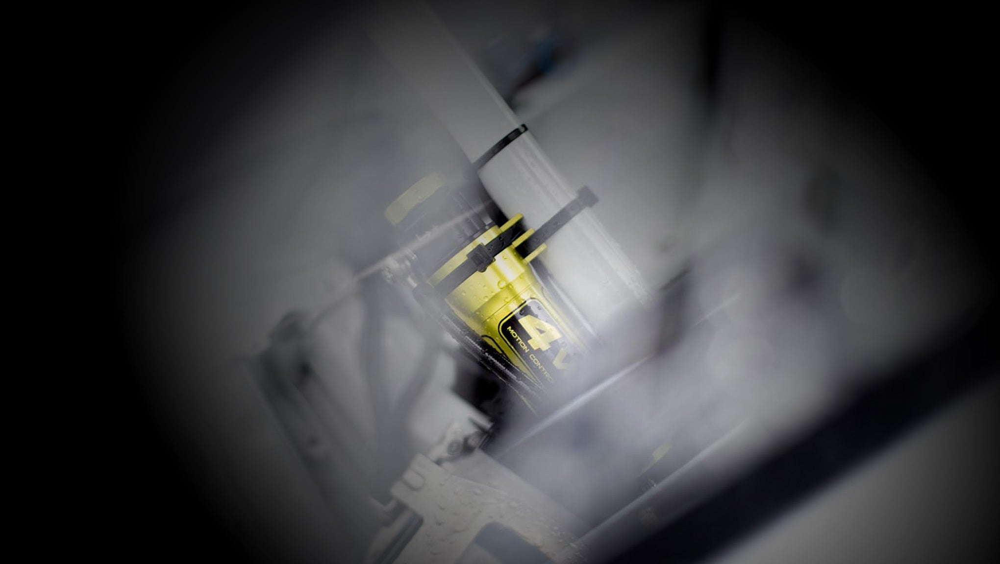
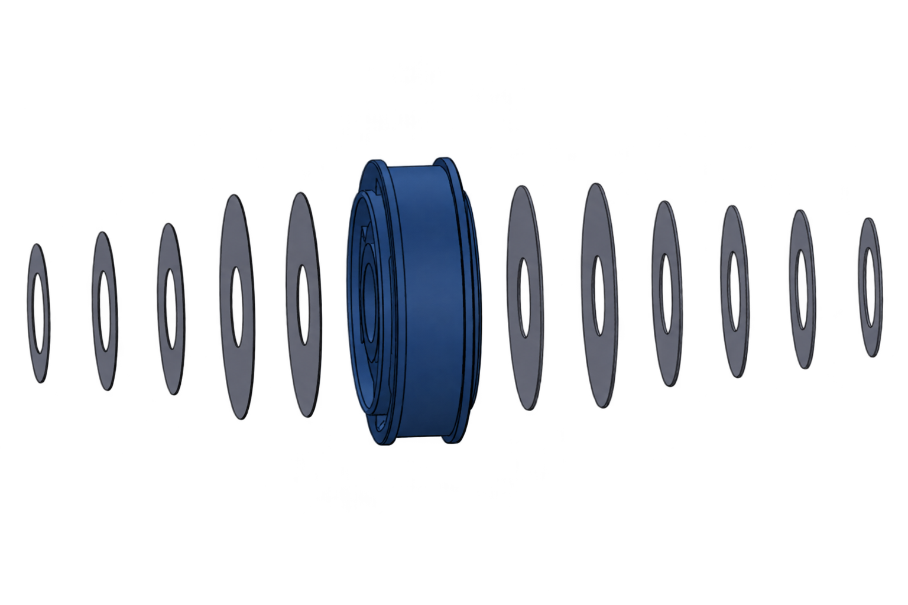
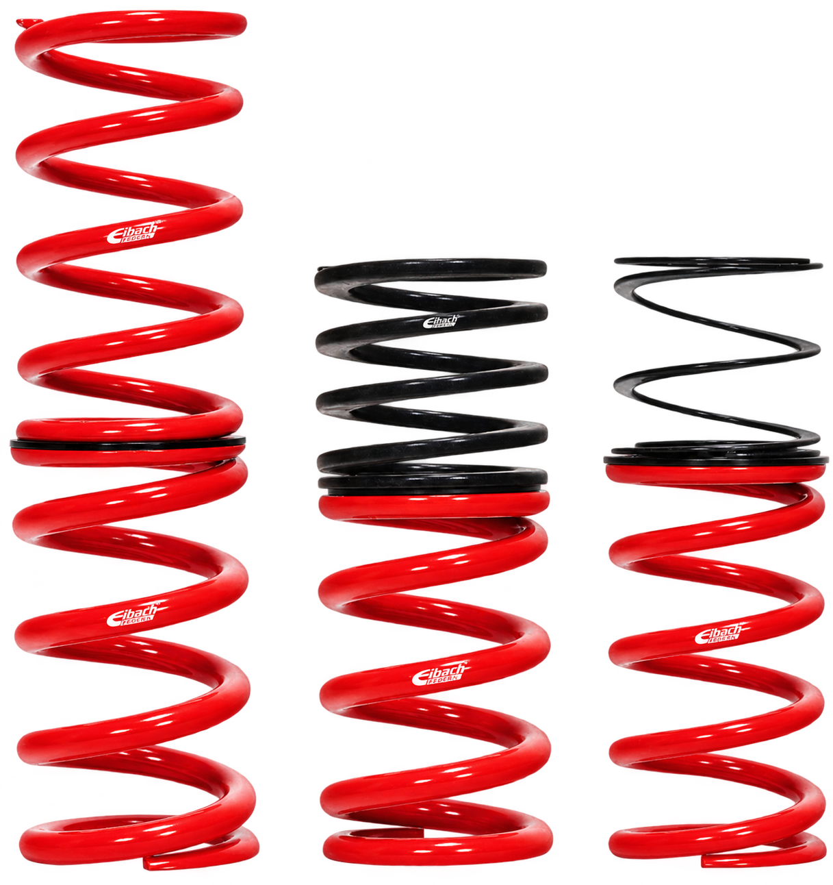

Suspension Technology
Apex Competition Systems shares information about suspension systems for road racing applications, including damper selection, installation, setup, and tuning.
Explore the topics below as your setup evolves. For guidance specific to your car, configuration, and goals, contact us.
Suspension FAQs
Valve Technology

Digressive vs Linear Piston Valving
Digressive pistons produce a valving profile that is not straight or constant. As shaft speeds increase (like hitting a bump at high speed) the rate that damping force is created tapers off considerably. Digressive piston design exhibits low flow rate at low shaft speeds that provides a lot of resistance and control. Then the resistance rate increases when shaft speeds increase. Finally at a preset point (higher shaft speeds) the force rapidly tapers or “blows off”. This characteristic works tremendously well when going over bumps or curbs on a race track.
The opposite of digressive is linear. With a linear plot the rate of damping force generated varies very little. The damper exhibits a consistent feel through the entire stroke range. For example if you hit a specific size bump on the street or curbing on a race track you will feel the force of the impact. If you were to hit a bump that is twice as big, the impact feel will be twice as large. This is the opposite of digressive valving.
Precise Shim Stacks
Shims are deflection disks that cover up the ports on a piston. They regulate the fluid flow which generates the force in a damper. “Valving” or “re-valving” of a shock is accomplished by using shims that will provide enough resistance and damping ability for a particular application. Minute differences in the shims’ diameter and thickness are very critical. A few thousandths of variation in the dimensions can change a damper’s force profile significantly. The shims consistency is crucial in matching shock absorbers to one another. Modern race dampers utilize a high-grade steel shim material, ensuring precision matched dampers.
Spring Technology
Dual Spring
Suspension tuning is a precise balance. On one hand, the spring system should be soft enough to absorb track irregularities assuring maximum adhesion, while on the other hand the spring system must be firm enough to reduce the body roll, squat, and dive of the vehicle during cornering, acceleration and braking. For optimum balance, Eibach has developed the ERS double-spring system.
Main and Tender
The Eibach Main and Tender spring concept provides a softer initial rate when both springs are compressed together, then delivers the desired firmer final rate once the tender spring closes completely. The Main spring has a linear-rate characteristic and determines the final rate of the system. The Tender springs are available in linear or progressive-rate and determine the initial rate of the spring system.
Main and Helper
A Helper spring is used to prevent the Main spring from becoming loose in the spring seat when the suspension is unloaded or at full droop. The Helper spring, unlike the Tender spring, has very little spring rate, and therefore has no effect on the suspension characteristics of the vehicle. Up to 6” (150mm) of spring-to-perch gap can be covered with the use of a Helper spring.

Spring Technology
A single-adjustable damper such as the MCS 1WNR uses one control to primarily adjust rebound. "Primarily" because as shown on the force graph to the right, when rebound is increased (lower traces) the compression force also increases slightly (upper traces).
The 1NR offers a straightforward way to tune the car without managing a separate compression setting.
- A good choice for those who want a set & forget solution.
- 18 Clicks of Adjustment
- Each click produces a clear, predictable change in control.
- Future-Ready 2WNR Upgrade Path
The single adjustable is for those who want the benefits and grip of modern damper design but without the complexity of managing separate compression and rebound settings.

Seal Technology
A double-adjustable MCS damper lets you tune compression (bump) and rebound (extension) independently. The 2WNR puts both adjustments in one control at the top of the damper; the 2WR places compression adjustment on a remote reservoir and rebound adjustment at the damper. This gives you more control over chassis support and how the suspension settles after bumps and driver inputs.
- 2WNR: 14 clicks of bump and 18 of rebound adjustment.
- 2WR: Remote reservoir with 18 clicks of bump and rebound.
- Separate settings to tune each side of the damper stroke.
MCS Double Adjustables are the sweet spot for for Club Racers, Dedicated Track Cars and Time Attack. Adjustability to match changing track conditions, and to adapt to the car's development.

Technical Specs
The MCS 3WR adds a third adjustment to the 2WR layout: separate low-speed compression, high-speed compression, and rebound controls. Low-speed compression helps manage body motion during braking, turning, and acceleration; high-speed compression helps the damper respond to curbing and sharp bumps. The remote reservoir also adds fluid capacity for more consistent performance under sustained load.
- Independent low-speed and high-speed compression.
- 18 clicks each of high-speed compression and rebound.
- Separate controls give experienced drivers more setup options.
When you're ready to make the move up, the MCS 3-way can deliver! Faster drivers and faster cars will benefit from the enhanced adjustability.

Shock Dyno Basics
The MCS 4WR is available from ACS only by special order.
Why special order?
The MCS 4WR is developed for the most demanding professional and competition level applications.
The MCS 4-way operates in a narrower window which requires specific intial valving. If your team logs suspension data on a per session basis and have a decicated engineer to focus on setups, then you may benefit from this professional damper.
The 4WR gives you maximum definition through fully independent high and low speed circuits and MCS's most advanced blow off architecture.

Concave Flow Digressive Piston
Here are some of the common questions ACS receives about adjustable dampers.
What does the MCS 2WNR adjust?
The 2-Way Non Remote damper lets you adjust compression (bump) and rebound (extension) independently. Press the center release button to raise the knob for compression; push it down until it snaps into place for rebound.
How is the 2WR better?
The 2-Way Remote damper lets you adjust compression (bump) and rebound (extension) independently. This gives you more control over chassis support and how the suspension settles after bumps and driver inputs.
Which direction makes the damper firmer?
For either adjustment, turn the knob counterclockwise toward plus (+) to increase damping.
Turn it clockwise toward minus (-) to soften damping.
How many adjustment clicks are available?
This depends on the specific damper. The 2WNR has 14 clicks of compression, but all others have 19 positions (18 clicks), from 0 (softest) to 18 (firmest) for both bump and rebound.
How do I find the zero position?
Move the knob to the adjustment you want to set, then turn it clockwise gently until it stops. Back it off slightly if needed so it settles into a detent. That is position 0. Do not force the knob past the stop.
What starting settings does MCS recommend?
For initial installation, start both front and rear dampers at compression 4 and rebound 8. From each adjustment’s zero position, turn the knob counterclockwise 4 clicks for compression or 8 clicks for rebound.
How do I switch from rebound to compression?
Press the release pin in the center of the knob to bring it from the lower rebound position to the upper compression position. Push the knob down until it clicks to return to rebound.
Where should I leave the adjuster knob?
MCS recommends running the dampers with the knob locked in the lower rebound position.
Canister Holes
Typically a 2.5" hole will be large enough for the canister to pass through the inner fender well.
We recommend using a Seals-It Firewall Grommet to seal the hole. The 3" split style works well. ACS can provide these seals.
Suspension Technology
From heavy hitting entry level systems to the highest performance systems.
From the pioneers of the racing damper industry to your race car... brought to you by Apex Competition Systems.
- Monotube Design
- Single, Double and Triple Adjustable
- Up to 18 clicks of bump and rebound adjustment
- Spherical Bearing Mounts
- Industry leading internal engineering
- Ease of adjustment with changes you will feel